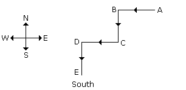
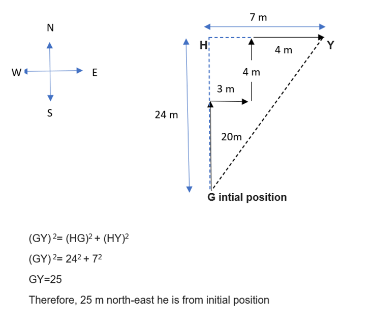

Q.1)
A man walks 5 km toward south and then turns to the right. After walking 3 km he turns to the left and walks 4 km. And then he goes back 10 km straight. Now in which direction is he from the starting place ?
- South-East
- North-West
- South
- West
Answer :Option B
From the given directions, now he is 1 km in the North-West direction.
Q.2)
Amit started walking positioning his back towards the sun. After some time, he turned left, then turned right and towards the left again. In which direction is he going now ?
- South-East
- North-West
- South
- West
Answer :Option C

Q.3)
A horse is facing north. It turns 90 degrees in the clockwise direction, then 180 degrees in the anti-clockwise and then another 90 degrees in the same direction. Which direction is the horse facing now ?
- South-East
- South
- North
- West
Answer :Option B
Starting from the initial point facing north, the horse turns 90 degrees clockwise, which means it turns towards East. Similarly, the other directions can be considered and written as : EWS Thus, the direction it is facing now is South
Q.4)
I am facing south. I turn right and walk 20 m. Then I turn right again and walk 10m. Then I turn left and walk 10m and then turning right walk 20m. Then I turn right again and walk 60m. In which direction am I from the starting point ?
- North
- East
- South
- North-East
Answer :Option D
The movements of the person are from A to F, as shown in Fig. Clearly, the final position is F which is to the North-east of the starting point A
Q.5)
A man walks 20 m towards north, then he turns right and walks 3 m, then turns left and walks 4 m and from there he walks 4 m towards east. How far and in which direction is he from his initial position ?
- 32 m north
- 40 m south
- 25 m north-east
- 22 m east
Answer :Option C
